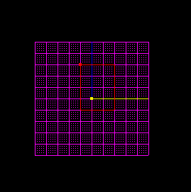
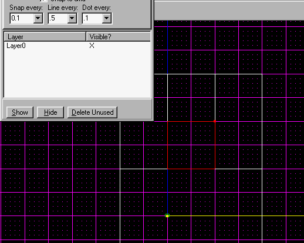
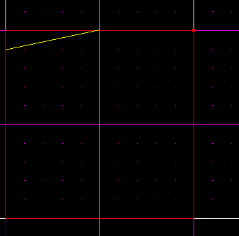
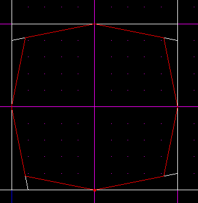
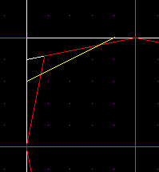
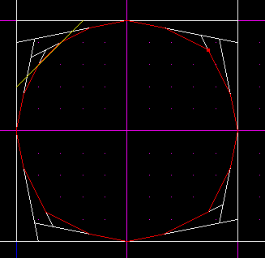
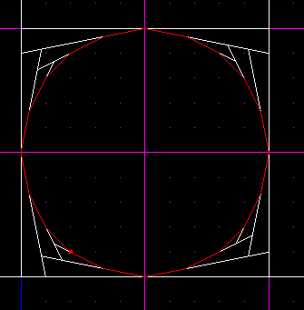

Circular Architexture
Author: EvanC
Are you tired of plain old square pillars? Want some circular ones?
This tutorial will tell you an easy way to do circular pillars(or any
type of circular architechture).
It is a simple, well known method thats been around for ages
but it's about time someone did a tutorial on it.
First, start with the room you'd like to add pillars to.

Go to the "map settings" menu in JED. CHange it so it looks like the ones in
the picture(Snap to 0.1, line evry 0.5 and dot every 0.1)

Now zoom in a bit and then make a cleave like this:

Do that to every side of the square untill you get this shape:

Now you need to do a cleave like the one in the next pic. You should see that
the claves follow a pattern. For every 1 unit they go across, the cleave
goes down an extra unit*. So, that means if you cleave from one unit across
you shuld go down 2, like in the picture(1=1 and 1+1=2, got it?)

Do that until you have done that on all the quarters(that means you have to do
it 8 times.) Then, once you've done that go along 2 units and down 3(like in
the next picture)

Do that to all the quarters(you only need to do this 4 times)
You should have this:

You can use this method to get a circle of even more detail, just remember
the pattern to follow(every 1 across, go the number across plus 1).
This simple method can be used for anything curved, spiral stairs, circular
pools of water, beams and supports and so on.
Evan C
* That means if you go across 10, you don't go down 20, you go down 11